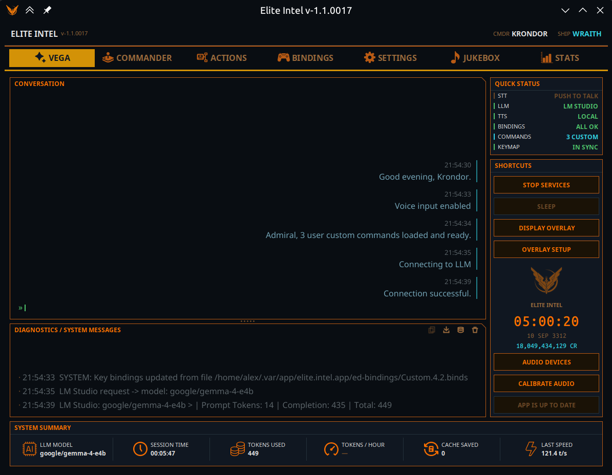

Pestaña Vega
 La pestaña por defecto, y la que
dejas abierta mientras vuelas. Arranca y detiene la pila de IA, muestra lo que Vega oyó y dijo,
informa del estado de cada subsistema y abre el overlay dentro del juego.
La pestaña por defecto, y la que
dejas abierta mientras vuelas. Arranca y detiene la pila de IA, muestra lo que Vega oyó y dijo,
informa del estado de cada subsistema y abre el overlay dentro del juego.

La pestaña se divide en cuatro zonas: los registros de Conversación y Diagnósticos a la izquierda, Estado rápido y Atajos en la barra lateral derecha, y la franja de telemetría Resumen del sistema abajo.
Conversación
Todo lo que dijiste y todo lo que Vega respondió, en un solo flujo. Tus líneas van a la izquierda y las respuestas de Vega a la derecha, para que una sesión larga siga siendo legible de un vistazo. Los comandos que escribes en el chat del juego (ver Todos los comandos) aparecen aquí igual que los hablados.
Diagnósticos / mensajes del sistema
El registro técnico — arranques de servicios, resultados de calibración, avisos de bindings, lo
que oyó el reconocimiento de voz (STT: [...]), operaciones con archivos. Nunca se lee en voz
alta; está para que veas qué está haciendo la app.
En la cabecera de la sección hay cuatro botones:
| Botón | Qué hace |
|---|---|
| Copiar | Copia al portapapeles el texto seleccionado en el registro. |
| Guardar paquete de soporte | Escribe un .zip con marca de tiempo para un informe de error: este registro, el registro de la aplicación, tu journal y los archivos de estado en vivo del juego, tus bindings, tus comandos personalizados, un resumen del hardware y un resumen de los niveles del micrófono (nunca audio). Lo que no se pudo recoger aparece listado dentro del paquete. Esto es lo que adjuntas a un informe de error. |
| Volcar la memoria de Vega | Escribe una instantánea JSON de la memoria de trabajo de Vega en la sesión actual. Solo funciona con los servicios en marcha. |
| Borrar | Vacía el registro de diagnósticos. |
Estado rápido
Seis indicadores en vivo. Cada uno muestra un estado y un color, así que un vistazo basta para saber si la pila está sana.
| Indicador | Estados |
|---|---|
| STT | En espera (servicios detenidos) · Escuchando · En pausa (te ignora) · Push to Talk (solo el botón asignado abre el micrófono) |
| LLM | En espera · Sin conexión (no pudo conectar) · el nombre del proveedor que realmente respondió, o Activo |
| TTS | En espera · Local (Kokoro / Supertonic) · Nube (Google / Microsoft Edge) |
| Asignaciones | Todo correcto, o N sin asignar |
| Comandos | Cuántos comandos personalizados hay cargados |
| Mapa de teclas | Sincronizado con el juego, o Modificado — tienes un borrador de bindings sin aplicar |
Merece la pena vigilar el indicador LLM. No informa de lo que configuraste, sino de qué proveedor respondió de verdad.
Atajos
| Botón | Qué hace |
|---|---|
| Iniciar / Detener servicios | Activa o desactiva toda la pila de IA. El botón se bloquea mientras arranca o se detiene para que no se pulse dos veces. |
| DORMIR / DESPERTAR | Despierta, Vega escucha continuamente. Dormida, ignora todo salvo una frase para despertarla (despierta) o una orden precedida de escucha — «Escúchame, baja el tren de aterrizaje.» Desactivado mientras Push to Talk está activo: entonces el botón asignado es la puerta. |
| MOSTRAR / OCULTAR OVERLAY | Muestra el overlay HUD siempre visible. La app recuerda cómo lo dejaste y lo restaura en el siguiente arranque. Si falta el binario del overlay, el interruptor lo indica en el registro en vez de fingir un overlay que no existe. |
| AJUSTES DE OVERLAY | Abre los ajustes del overlay HUD — transparencia, tamaño del texto, colores y dónde se dibuja (monitor, visor VR, ambos o una ventana de captura). |
| Dispositivos de audio | Elige micrófono y altavoz. El cambio surte efecto al momento: solo se reinicia el reconocimiento de voz (micrófono) o la voz (altavoz). |
| Calibrar audio | Mide el ruido de fondo y el nivel de tu voz y ajusta la puerta de voz. Solo disponible con los servicios en marcha. Hazlo una vez antes del primer vuelo, y otra vez si cambias de micrófono o de habitación. |
| Actualizar | Aparece cuando hay una nueva versión disponible. |
Entre los dos grupos de botones está el bloque del comandante — tu nombre, tu nave, la hora y tu saldo de créditos en vivo.
Resumen del sistema
Una franja de telemetría de seis bloques al pie de la pestaña:
| Bloque | Significado |
|---|---|
| Modelo LLM | El modelo que atendió la petición más reciente |
| Tiempo de sesión | Tiempo desde que arrancaron los servicios |
| Tokens usados | Prompt + respuesta + caché, de la sesión |
| Tokens / hora | Un ritmo proyectado. Se queda vacío los primeros 10 minutos mientras reúne datos |
| Caché ahorrada | Tokens servidos desde la caché. El 0 se muestra a propósito — es información, no un dato que falte |
| Última velocidad | Tokens por segundo de la última respuesta |
Para el desglose completo, consulta la pestaña Estadísticas.
Community 👉Matrix👈